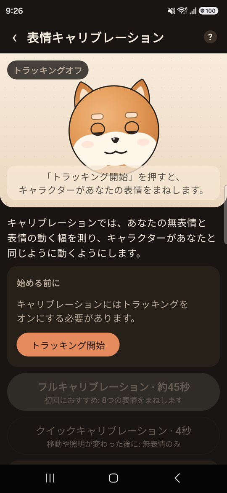

Android スマホがフェイストラッカーに
スマホのカメラで、Warudo・VSeeFace・VNyan のフェイストラッキング。iPhone は不要です。
Play ストアの招待リンクをメールでお送りします。
GitHub の Assets から .apk ファイルを入手。
Android 10 以降（64 ビット）・スマホと PC は同じ Wi-Fi
ユーザーガイド
iFacialMocap · Wi-Fi → PC
対応アプリ
- Warudo
- VSeeFace
- VNyan
ほか、iFacialMocap 対応アプリ。 VMC アプリにも対応（上級者向け）。
3 ステップで開始
スマホと PC を同じ Wi-Fi に。
スマホを立てる
顔から 30〜50 cm、目の高さに。光は正面から。

PC で iFacialMocap を選ぶ
PC アプリで iFacialMocap を選び、アプリに表示されるスマホのアドレスを入力。

開始してキャリブレーション
トラッキング開始を押し、キャリブレーションを一度（45 秒）。

配信のために
映像はスマホの中だけ
PC に送るのはトラッキングの数値だけ。録画もアップロードもしません。
アカウント・広告なし
登録も広告も解析ツールもありません。
あなたの顔に合わせて
キャリブレーションは一度だけ。スマホを動かしたら 4 秒のクイック。
イン・アウト・アウト広角
くっきり映るアウトカメラも使えます。手順は音声でご案内。
画面オフでも動作
バックグラウンドで動き続け、不自然な跳ねは取り除きます。
4 言語対応
初回ガイドと ? 説明を English・한국어・日本語・简体中文で。
動作環境
| 最低 | 推奨 | |
|---|---|---|
| Android | Android 10 以降 | Android 13 以降 |
| プロセッサー | 64 ビット（ARM64） | 2021 年以降のミドルレンジ以上 |
| メモリ | 4 GB | 6 GB 以上 |
| ネットワーク | スマホと PC が同じ Wi-Fi | 5 GHz の Wi-Fi、PC は有線または 5 GHz |
Galaxy S24 Ultra（Android 16）で約 40 fps を確認。古い機種は遅くなります。
Zuna Studio でもっと
私たちの Windows アプリです。同じスマホで腕や指までトラッキングし、スマホのデッキで配信を操作。Warudo・VSeeFace・VNyan には不要です。
| 機能 | Warudo / VSeeFace / VNyan | Zuna Studio |
|---|---|---|
| 顔と頭 | 対応 | 対応 |
| 肩と腕 | 別のトラッカーが必要 | 対応 |
| 指 | 別のトラッカーが必要 | 対応 |
| PC から始めるキャリブレーション | 非対応 | 対応 |
| スマホ・タブレットの配信デッキ | 非対応 | 対応 |
| 自分のスマホだけがアバターを動かせる | 非対応 | 対応 |
Studio で増えることをすべて見る
トラッキング
- 同じカメラで上半身・腕・指
- アバターの体型に合わせて動く腕
- キーやデッキのボタンでクイックキャリブレーション
アバター
- 口の形 あ・い・う・え・お とマイクのリップシンク
- 表情ショートカットと自動表情
- 揺れる髪、小物、投げられるアイテム
配信
- OBS にそのまま送れる透過背景（Spout2）
- デッキ：OBS シーン、録画、リプレイ、ミュート
- シーン別 BGM とワンタップのマクロ
安心
- スマホ登録でほかの機器をブロック
- 新しいデッキ機器は PC で 4 桁の数字で許可
- 映像はスマホの外に出ません


無料相談
あなたのアバター専用の Studio
Studio は一般公開していません。表情・腕・指・カメラ・デッキまで、アバターに合わせてお作りします。ご相談は無料です。
Zuna Studio について問い合わせるmaxjang123@gmail.com
お送りいただくもの
- アバターのファイルVRChat プロジェクト・.unitypackage、Humanoid の FBX、または VRM
- シェイプキーARKit・Perfect Sync、VRChat の口の形、VRM、MMD、またはなし
- シェーダー名前とバージョン（例：lilToon 2.x）
- ライセンス利用規約や販売ページ。配信・改変の許可が必要
- そのほか（任意）表情アニメーション、衣装、小物、揺れもの
- 使用環境スマホ、Windows 10/11 64 ビット（DirectX 12）、OBS＋Spout2
- 配信の構成（任意）OBS シーン、背景、BGM、カメラ構図
ファイルは添付ではなくダウンロードリンクで。パスワードは送らないでください。
よくある質問
iPhone や iFacialMocap アプリは必要ですか？
いいえ。PC アプリは Zuna Facecap を iFacialMocap として認識します。
カメラの映像はどこかに送られますか？
いいえ。映像はスマホに残り、PC に送るのは数値だけです。
インターネットは必要ですか？
いいえ。自宅の Wi-Fi で動きます。インターネットは更新確認だけに使います。
Warudo・VSeeFace・VNyan で体や手も動きますか？
顔と頭だけです。腕や指は Zuna Studio で。
アウトカメラは使えますか？
はい。設定 → カメラ → アウト または アウト広角。音声ガイドをオンに。
Zuna Studio は必須ですか？
Warudo・VSeeFace・VNyan では不要です。もっと使いたい方はご依頼ください。
PC アプリがスマホを見つけません
同じ Wi-Fi か（ゲスト不可）、Windows ファイアウォールで「プライベート ネットワーク」を許可したか、VPN がオフか、スマホのアドレスが最新かを確認してください。
古いスマホでも使えますか？
Android 10 以降・64 ビットなら使えます。遅いときは上半身・手・60fps トラッキングをオフに。
APK は安全？更新は？
私たちが署名したテスト版です。「Zuna Facecap Dev」としてインストールされ、GitHub の更新をアプリでお知らせします。普通のアプリと同じく削除できます。
今日から使えます
スマホと、いつもの PC アプリだけで。
Play ストアの招待リンクをメールでお送りします。
GitHub の Assets から .apk ファイルを入手。
Android 10 以降（64 ビット）・スマホと PC は同じ Wi-Fi